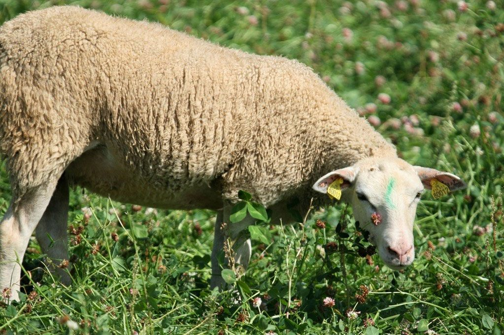
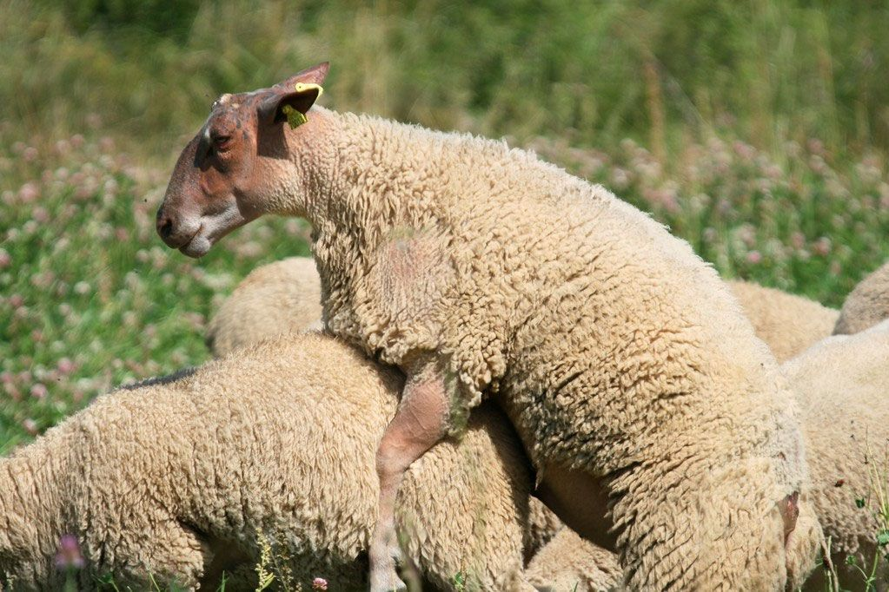

Conseils d'élevage
Lutte, agnelles et allaitement artificiel
Les brebis
- L'évaluation permanente de l'état d'engraissement des brebis permet de gérer une alimentation au meilleur coût tout au long de l'année.
- Penser au flushing pour avoir des brebis en reprise d'état au moment de la lutte (niveau d'état corporel entre 2 et 2,5). Les transitions alimentaires sont nécessaires lors de changements d'alimentation, pour ne pas être trop brutal.
- La tonte : 1 mois avant la mise bas (attention à ne pas trop les secouer) ou 2 mois avant la lutte si nécessaire. Déparasitage (externe et interne) et parage des onglons avant la lutte.
- Une brebis peut être croisée avec un bélier d'une race à viande pour optimiser la conformation des agneaux. L'utilisation d'un bélier de race pure permet la production d'agnelles de renouvellement ou de reproducteurs.
- Si vous ne pouvez pas trier vos meilleures brebis, renouvelez souvent les béliers Romane.
- Les sélectionneurs et l'équipe de l'OS sont à votre disposition pour vous fournir le renouvellement de votre troupeau.


Les béliers
- Le bélier doit être âgé de 12 mois minimum pour la première lutte.
- La fabrication des spermatozoïdes dure 60 jours : préparez vos béliers 2 mois avant la lutte.
- Pratiquer un flushing : fourrage de bonne qualité et apport supplémentaire de concentrés. En plus, un apport en minéraux et vitamines est conseillé.
- Un déparasitage externe et interne avant la lutte est prudent. Tondre si nécessaire.
- Prévoir un nombre de béliers suffisant : 1 bélier pour 20 brebis en contre-saison (ou 10 agnelles), et 1 bélier pour 40 brebis pendant la saison (ou 20 agnelles).
Une bonne lutte = un bélier en bonne santé.
L'allaitement artificiel
Une vidéo de Hubert Mony, président de l'OS Romane, présentant ses bonnes pratiques pour un allaitement réussi.